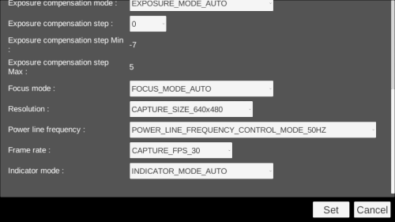

You can control the camera installed in Moverio.
| function | contents |
|---|---|
| Still image shooting | Still image shooting |
| Video shooting | Video shooting |
| Preview display | Preview display |
| Capture data acquisition | Capture data acquisition |
| Brightness control | Brightness acquisition / setting |
| Get minimum brightness | Get minimum brightness |
| Get maximum brightness | Get maximum brightness |
| White balance mode control | Get / set white balance mode |
| Gain control | Gain acquisition / setting |
| Get maximum gain | Get maximum gain |
| Get minimum gain | Get minimum gain | Focus distance control | Focus distance acquisition / setting |
| Get maximum focus distance | Get maximum focus distance |
| Get minimum focus distance | Get minimum focus distance |
| Exposure compensation mode control | Get / set exposure compensation mode |
| Manual exposure compensation step control | Get / set manual exposure compensation step |
| Get minimum manual exposure compensation step | Get the minimum manual exposure compensation step |
| Get maximum manual exposure compensation step | Get maximum manual exposure compensation step |
| Focus mode control | Get / set focus mode |
| Resolution control | Get / set resolution |
| Power line frequency control | Power line frequency acquisition / setting |
| Frame rate control | Get / set frame rate |
| Indicator mode control | Get / set indicator mode |
| Reconnect | Moverio reconnect |
The above function is implemented by CameraControl of sample scene

| label | function |
|---|---|
| Take picture | Still image shooting |
| Start/Stop record | Video shooting |
| Brightness | Brightness control |
| Brightness Min | Get minimum brightness |
| Brightness Max | Get maximum brightness |
| White balance mode | White balance mode control |
| Gain | Gain control |
| Gain Min | Get minimum gain |
| Gain Max | Get maximum gain | Focus distance | Focus distance control |
| Focus distance Min | Get minimum focus distance |
| Focus distance Max | Get maximum focus distance |
| Exposure compensation mode | Exposure compensation mode control |
| Exposure compensation step | Manual exposure compensation step control |
| Exposure compensation step Min | Get minimum manual exposure compensation step |
| Exposure compensation step Max | Get maximum manual exposure compensation step |
| Focus mode | Focus mode control |
| Resolution | Resolution control |
| Power line frequency | Power line frequency control |
| Farame rate | Frame rate control |
| Indicator mode | Indicator mode control |
| Reconnect | Moverio reconnect |
Please refer to [Moverio Basic Function SDK Developer’s Guide] for details of the function.